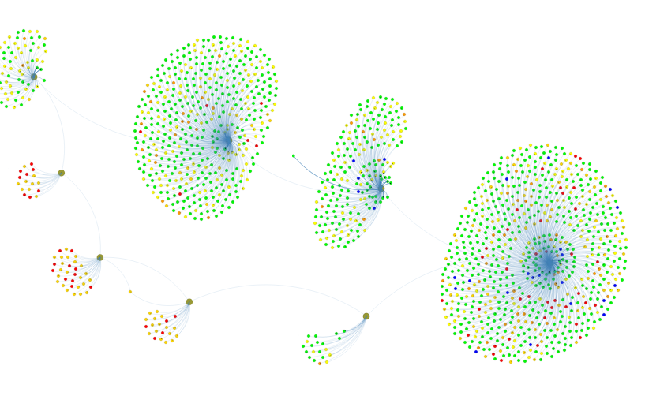
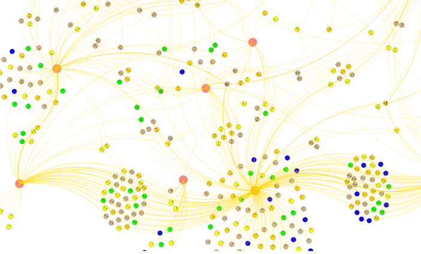

About BRIDGES
BRIDGES(Bridging Real-world Infrastructure Designed to Goal-align,
Engage, and Stimulate), an NSF TUES project, is focused on two primary goals,
(1) providing
The BRIDGES toolkit provides a set of classes(C++ and Java are supported) that serve as building blocks to the common CS data structures, including lists (arrays, linked lists), tree structures (general trees, binary trees, binary search trees, AVL trees), graphs (adjacency list and adjacency matrix representations) used in freshmen/sophomore level computer science. BRIDGES handles the complex data and web interfaces, thereby letting students focus on the core course materials, while providing a more engaging means to view their output on the web (that can be shared)
Examples of BRIDGES projects can be seen on the right panel.A short video (published in NSF Video showcase 2019) gives an introduction to BRIDGES.
BRIDGES Status
Current version of BRIDGES is 2.3.3 (Released June 1, 2018).
Version 2.3.3 includes additional datasets interfaced to
BRIDGES (a dataset and BRIDGES API for Songs), a 2D Grid type
that can be used for image related applications, numerous
bug fixes and improvements to the base classes.
See on latest changes to BRIDGES and its history of earlier changes.
for more information.
Looking for New BRIDGES Users
We are currently looking for 3-4 additional external users to adopt BRIDGES in their data structures/algorithms courses and provide feedback. Stipends are available for instructors who would like to partner with our team and collect student feedback as part of the BRIDGES evaluation.BRIDGES News
We have just released BRIDGES version 2.4.1 (Jan, 2019, in C++, Java and Python), which (in addition to numerous fixes/enhancements) adds a ColorGrid data type (see example visualization on the right), support for Spatial data Structures (Kd Tree), a shape collection structure, and a Song Lyrics dataset. In the works are extensions to using BRIDGES to build simple games (demo at SIGCSE 2019).
BRIDGES Workshop - Feb. 27, 2019, SIGCSE 2019, Minneapolis, MN.
We will be conducting a BRIDGES workshop at ACM SIGCSE 2019, on Wednesday Feb. 27, 7-10pm (Hyatt Greenway E (2nd Floor). Please see this link for more information.BRIDGES Workshop - June 6, 2018, Temple University, Philadelphia
We plan to conduct a 1 day BRIDGES workshop on June 6, 2018, at Temple University. We encourage instructors to take advantage of this workshop if you are interested in using BRIDGES in your Data Structures/Algorithms courses. Limited travel support is available (can cover regional attendees). For more information see the following links for the workshop flyer and signup information
Acknowledgements
The BRIDGES project is funded by the National Science Foundation through a TUES grant DUE-1245841 and an IUSE grant DUE-1726809.
BRIDGES Examples
- A singly linked list using a reduced version of the IMDB actor/movie dataset.

- Bacon Number and Path Computation using the IMDB actor/movie dataset.
Example illustrates the path between Kevin Bacon and Denzel Washington.

- A binary search tree built using earthquake magnitudes;
data from the USGIS earthquake feed (periodically retrieved and stored on
server, so as to always access the most recent quakes).

- Graph of earthquake data, clustered by magnitude and colorcoded by quake magnitude. 
- Graph of IMDB actor/movie data, clustered by genre and colorcoded by movie ratings. 
- 2D grid structure example that can form the basis for a variety of image processing operations.